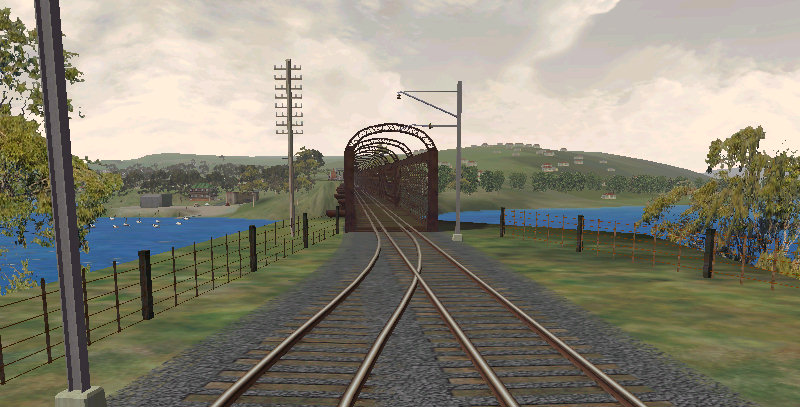
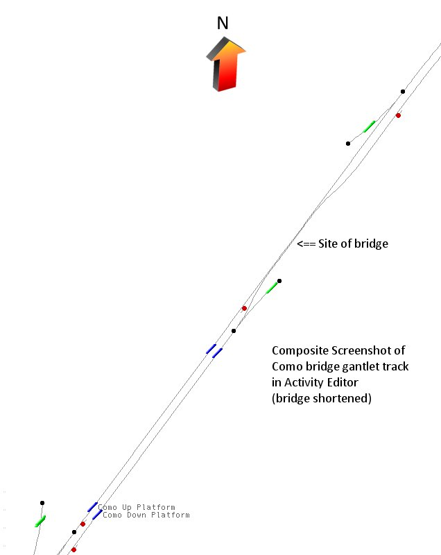
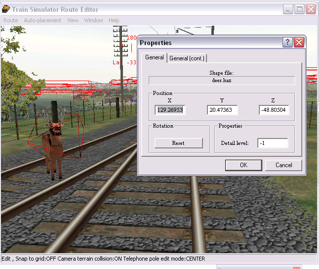
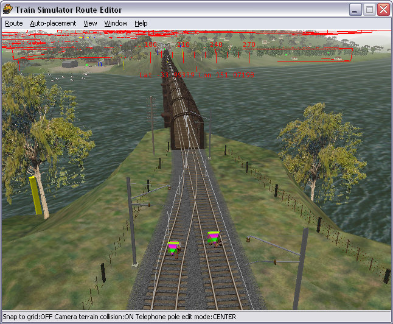
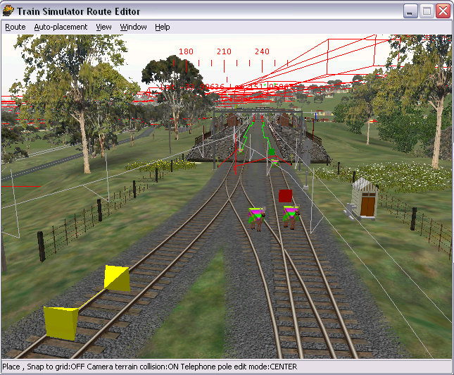
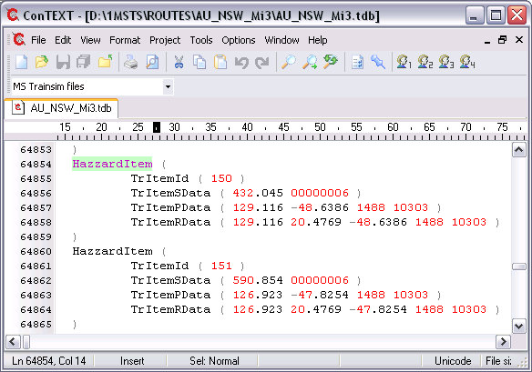
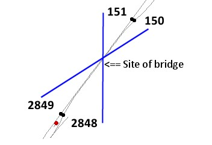
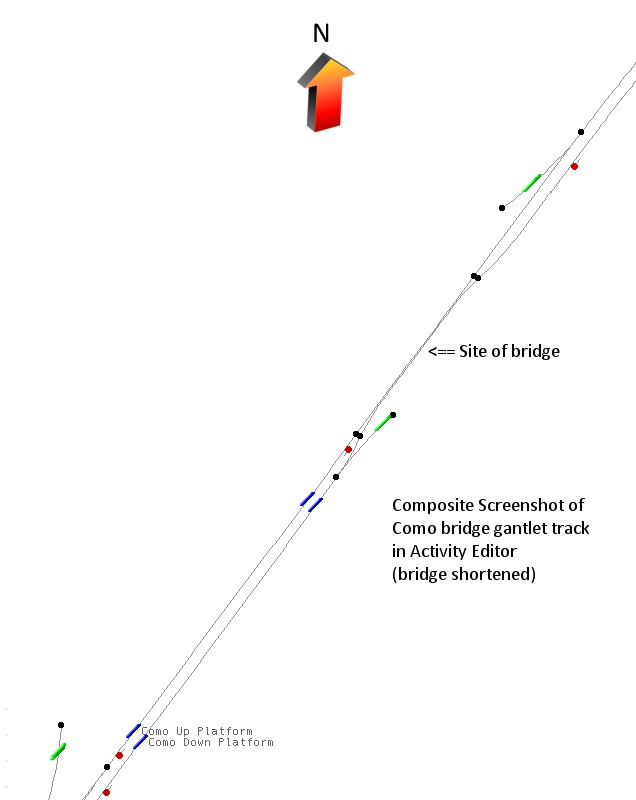

One of the disadvantages of using speedpost items to place nodes on positions other than isolated diamond crossings is that they can sometimes not jump across 2 tracks or, more frequently jump across more than two tracks: their unpredicatability in areas other than isolated diamond crossings can make placing them problematic.
It's probably better to use the deer hazard as at least you can be sure of its placement. You will need to use one deer hazard for each proposed node.
Let's work through an example which should explain the process enabling you to adapt it to your own route construction.
The example I'm going to use is the bridge at Como in the Main Illawarra v3 route. In Route Editor, you'll find this bridge at tile 1288+10303 (x=50, z=-200). The line is double-track on both sides of the bridge but narrows to gantlet track over the bridge - gantlet track is where one track overlaps, but doesn't cross over another track, thus.....

Here's the area in Activity Editor.....

Go into Route Editor, click Object Selector (or press F5) and place your deer hazard. Once you've placed your deer hazard, click Modify button (F2), right-click on the deer hazard and make a note of the "x" and "z" co-ordinates: this will become important later.

Repeat, placing deer hazards on both lines at the beginning and end of the gantlet track, recording the co-ordinates as you go along.
Here are the north-side deer hazards placed.

Here are the south-side deer hazards placed.

These are the co-ordinates I've recorded:
| North-side Down Mainline |
x = 129.2695, z = -48.8050 |
| North-side Up Mainline |
x = 126.8827, z = -47.7954 |
| South-side Down Mainline |
x = 113.9810, z = -375.7926 |
| South-side Up Mainline |
x = 116.0796, z = -375.0337 |
(For my international readers, Australian railway systems use the terms UP and DOWN to refer to the direction of central station - UP is towards the central station, DOWN is away from the central station.)
What we are going to do is link North-side Down Mainline with South-side Up Mainline and North-side Up Mainline with South-side Down Mainline, thus providing the crossover linkage.
Now open the tdb and tit files in a Unicode-aware editor such as ConTEXT and search for Hazzard (sic). You will find four items matching your four placements in RE: they will not necessarily be together. In this route, I find Hazzard Items at TrItems 150, 151, 2848, 2849. We need to sort out which is which otherwise the nodes won't work properly. The co-ordinates in the .tdb and .tit are close, but don't exactly match the co-ordinates as shown in the pop-up window in RE (the discrepancy is only 3 cm!). Nevertheless, you will be able to discern which hazard belongs to which TrItem.

Examining the location parameters reveals the following:
North-side Down Mainline - TrItem ( 150 )
North-side Up Mainline - TrItem ( 151 )
South-side Up Mainline - TrItem ( 2849 )
South-side Down Mainline - TrItem ( 2848 )
To achieve the crossover links, we will need to link 150 - 2849 and 151 - 2848: thus.....

Convert the HazzardItems to Crossover Items by replacing as follows:
Here's the final appearance in Activity Editor (compare it with the screenshot above) - note that you have now got four nodes (black dots) protecting the narrowed track.

Save, quit and let's try out the gantlet track.